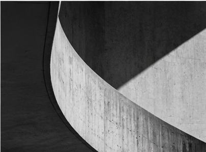
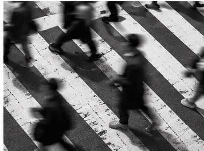
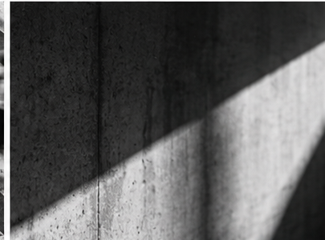
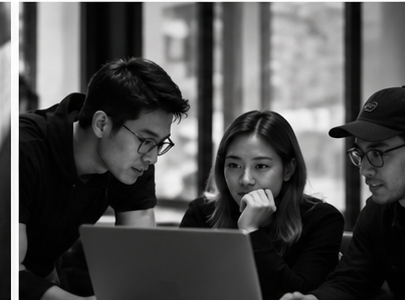
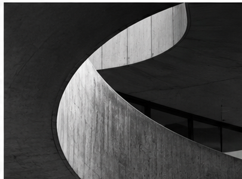
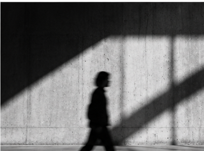
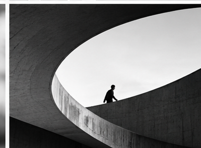

OPENING — HUMAN + AI
HUMAN
+
AI
THE FUTURE OF DIGITAL PRODUCT DEVELOPMENT
Membangun Produk Digital melalui Kolaborasi Manusia dan AI
JULIANTO AHMAD NUGRAHA
BANDUNG INNOVATION WEEK 2026

THE SHIFT
AI IS CHANGING
HOW WE WORK.
Cara kita membangun produk digital sedang berubah.
TRADITIONAL WORKFLOW
AI-ASSISTED WORKFLOW
Search
→
Analyze
Process
→
Explore
Create
→
Develop
→
THE WORKFLOW IS EVOLVING.

PRODUCT THINKING
START WITH THE
PROBLEM.
NOT THE TOOL.
Pahami kebutuhan manusia sebelum menentukan solusi.
COLLABORATION
HUMAN VS AI?
WHY NOT HUMAN
+
AI?
+
HUMAN
Empathy
Context
Judgment
Responsibility
AI
Speed
Analysis
Exploration
Assistance
BETTER TOGETHER.
PRODUCT TEAM
ONE PRODUCT.
MULTIPLE PERSPECTIVES.

PRODUCT TEAM
BA
Understand
Business needs
DESIGNER
Shape
User experience
DEVELOPER
Build
Technical solution
AI SUPPORTS EVERY ROLE.

PRODUCT WORKFLOW
FROM IDEA
TO EXPERIENCE.
HUMANS LEAD.
AI ASSISTS.
01
DISCOVER
02
DEFINE
03
DESIGN
04
BUILD
05
IMPROVE
RESEARCH
FROM RESEARCH TO
BETTER DECISIONS.
USER FEEDBACK
“Aku bingung harus mulai dari mana”
“Terlalu banyak langkah untuk hal simpel”
“Nggak tahu sudah sampai mana”
“Istilahnya bikin bingung”
AI
KEY INSIGHTS
Titik awal tidak jelas
Proses lebih panjang dari kebutuhannya
Status tidak transparan
AI helps find patterns.
Humans validate the insights.
DESIGN
FROM IDEAS
TO INTERFACES.
EXPLORE
→
CREATE
→
VALIDATE
EXPLORE
CREATE
VALIDATE
AI helps explore design options.
Designers shape the experience.
CASE STUDY
A SIMPLE TASK.
A COMPLEX EXPERIENCE.
Understanding the patient journey.
PATIENT JOURNEY
SEARCH
→
CHECK
→
BOOK
→
CONFIRM
01 / SEARCH
Finding the right doctor
Informasi dokter sulit ditemukan.
02 / CHECK
Checking availability
Jadwal praktik kurang jelas.
03 / BOOK
Completing registration
Langkah pendaftaran terasa panjang.
04 / CONFIRM
Getting confirmation
Status booking tidak pasti.
WHERE CAN WE MAKE IT BETTER?
*ILLUSTRATIVE CASE STUDY — NOT ACTUAL PATIENT RESEARCH.
SOLUTION EXPLORATION
LESS FRICTION.
BETTER EXPERIENCE.
BEFORE / COMPLEX
5
1.
Search doctor
2.
Find schedule
3.
Check availability
4.
Fill registration
5.
Wait for confirmation
→
AFTER / SIMPLIFIED
3
1.
Choose doctor
2.
Select available slot
3.
Confirm appointment
AI EXPLORES.
HUMANS VALIDATE.
*CONCEPTUAL REDESIGN — NOT A VALIDATED RESULT.

THE HUMAN ROLE
WHAT AI CANNOT REPLACE.
EMPATHY
Memahami kebutuhan manusia.
JUDGMENT
Mempertimbangkan keputusan.
CONTEXT
Memahami situasi dan kondisi.
RESPONSIBILITY
Bertanggung jawab atas dampak.

CLOSING
DON’T JUST BUILD WITH AI.
BUILD
BETTER
WITH AI.
AI accelerates the process. Humans give it purpose.
THANK YOU.
Julianto Ahmad Nugraha
BANDUNG INNOVATION WEEK 2026